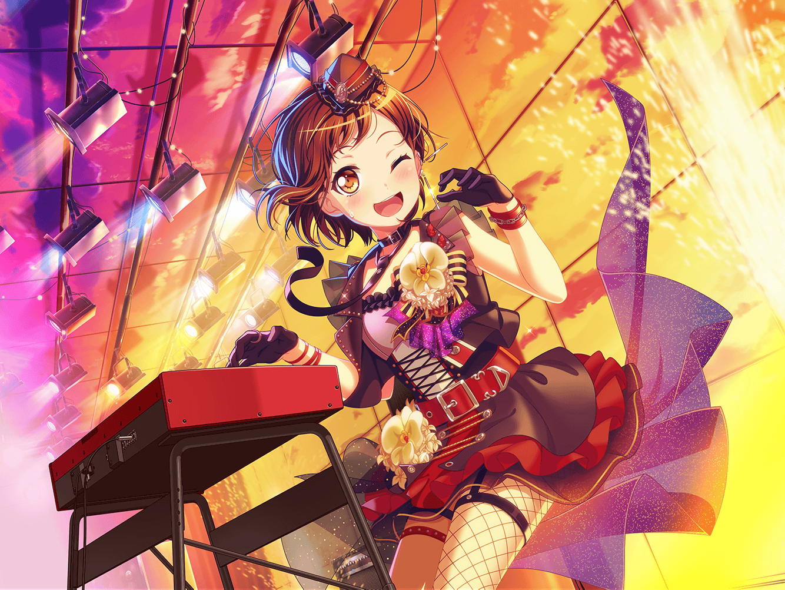

羽沢珈琲店
つぐみ
いらっしゃいませ！
あ、{{userName}}さん、こんにちは
つぐみ
今日はお休みですか？ はい、私はお店の手伝いで
つぐみ
えっ？ 偉いですか？ えへへ、そんなことないですよ
つぐみ
そうだ。今日はお店も落ち着いてたので
試作品のコーヒーを作ってたんです。
よければ飲んでみませんか？
つぐみ
それじゃあ、すぐ用意しますね！ ちょっと待っててください
数分後
つぐみ
{{userName}}さん、お待たせしました！
つぐみ
私も、ここで試飲していってもいいですか？
つぐみ
ありがとうございます！
それじゃあ、冷めないうちに飲んでみてください
つぐみ
……
つぐみ
うーん……ちょっと甘すぎますね。それに苦味も強いかな……
つぐみ
焦がしキャラメルを加えてみたんですけど、
ちょっと焦がしすぎちゃったみたい……
元のカフェオレの方が美味しいですよね……
つぐみ
やっぱり、無理に何かを変えようとしちゃダメですね。
これは変わらなくてもいいものでした
つぐみ
……えっ？ あ！ すみません。
最近、『変わる』ってことを考える機会が多かったので、つい
つぐみ
実は、この間Afterglowのみんなで、
ちょっとぶつかっちゃったことがあって……
つぐみ
みんなAfterglowが大好きで、大切だからこそ
ぶつかっちゃったんですけど
つぐみ
蘭ちゃんは、Afterglowを続けるために、
どんどん変わっていったんです……
つぐみ
変わっていく蘭ちゃんの書いた歌詞の意味が、
私達、理解できなくなっちゃったんです
つぐみ
１つのフレーズをとってみても、みんなそれぞれ受け取り方が
違ったりして……
つぐみ
今思えば、あの時にはもう、今までの『いつも通り』じゃ
なくなってたんですよね
つぐみ
先に進んでいく蘭ちゃんの背中に追いつかなきゃ！ って、
ちょっと焦ったりもして
つぐみ
でも、みんなでたくさん話して、一緒に夕焼けを見て、
変わることも変わらないことも、大切だと思えたんです
つぐみ
何かを無理やり変えようとしてもうまくいかないし、
意味がないのかもしれないですね
つぐみ
このカフェオレも、無理やり変えようとしなくても
『いつも通り』が１番美味しいです
つぐみ
これからも、変わっていく蘭ちゃんやみんなの背中を、
私は私のペースで追いかけていきたいなって思ってます
つぐみ
はい、ありがとうございます！ 頑張ります！
つぐみ
なんだかたくさん話しちゃってすみません。
今、新しいコーヒーを持ってきますね！
『いつも通り』のやつを！